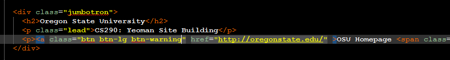
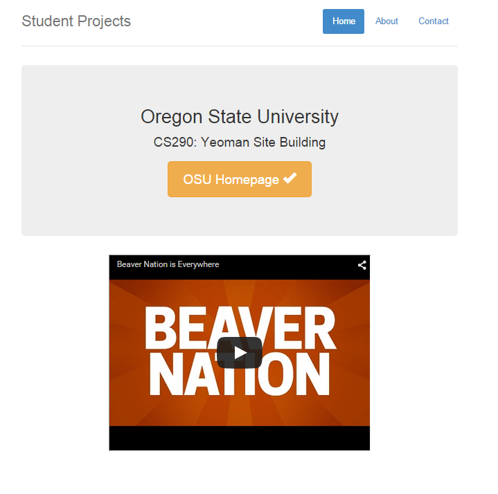
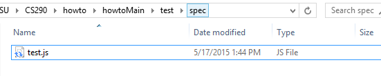
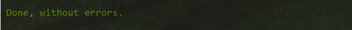
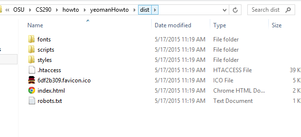

Preparing the Content
Finalizing your website
With our simple webpage finished, it’s entirely possible now to finish up and call it a day. However, it’d be nicer to clean up that page so it looks a bit more professional and a bit more functional. Within the html file, let’s center the youtube link by adding
tags around the previous
tag. Prior, the splendid button served as a hyperlink towards nowhere. Let’s change its color to orange and set it link to the OSU homepage.
 Depending on the build of your site, you may feature javascript or angularjs heavily. If this is the case, take a look at the testing options found in the test folder
It's possible to set up some automated tests here to determine if your functions are working effectively. Unfortunately, today our guide does not feature any testing. However, here is some added information on unit testing with angularjs. Now with these changes made, lets return to Grunt. This time, just type
grunt build
This will run an automated process to lint, test, and compile our webpage. If an error is detected, the build process will abort and give you an error message. Otherwise, expect to see the message Upon finishing,
Now, a new folder will have been created in the root folder, /dist/. Examine your new index.html within the /dist/ folder.
Before we go through the pain and joy of going live, let’s do one final test: local hosting of the dist version. In cmd, type
grunt serve:dist
Think of this as a modified version of our serve action. Before, we called it to test the site during development. With build being called though, things get changed. Let’s test just to ensure everything is working.

Finally, you can simply drag this dist folder onto your webhost, and you’ll have a live functioning version of your webpage. Don't worry too much about this /dist/ folder. If you're unhappy with the live version of your website, if you run 'grunt build' again, the first process is to sanitize the /dist/ folder and clear out anything from the old build.
Part 7: Conclusion